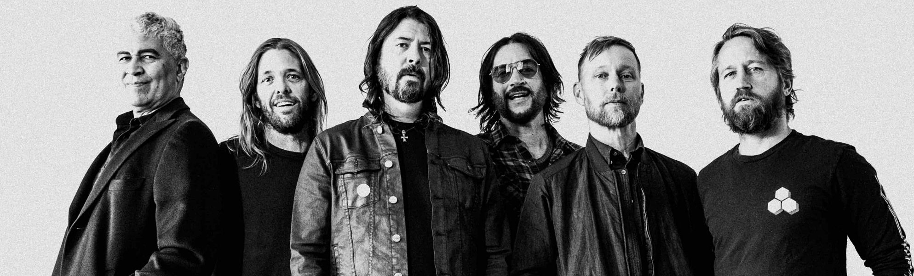

Foo Fighters es una banda estadounidense de rock (rock alternativo,
post grunge, metal alternativo entre otros subgéneros) formada en la
ciudad de Seattle en 1994 por Dave Grohl, exbaterista de Nirvana y
Scream.
El grupo debe su nombre a los ovnis y los diversos fenómenos
aéreos que fueron reportados por los pilotos de los aviones aliados en
la Segunda Guerra Mundial, que se conocen colectivamente como Foo
Fighters. Antes del lanzamiento de su álbum debut en 1995, Grohl, como
único miembro oficial, reclutó al bajista Nate Mendel y el baterista
William Goldsmith, ambos anteriormente miembros de Sunny Day Real
Estate, así como su compañero en las giras de Nirvana, Pat Smear como
guitarrista para completar la alineación.
La banda comenzó conactuaciones en Portland, Oregón. Goldsmith renunció durante la
grabación del segundo álbum del grupo, "The Colour and the Shape"
(1997), cuando la mayoría de las partes de batería fueron re-grabadas
por el propio Grohl, hasta que luego se unió Taylor Hawkins como
baterista. La partida de Smear siguió poco después.
Fue reemplazado
por Franz Stahl, respectivamente, aunque fue despedido antes de la
grabación del tercer álbum del grupo, "There Is Nothing Left to Lose"
(1999). La banda continuó brevemente como trío hasta que Chris
Shiflett se unió como guitarrista principal de la banda después de la
finalización de "There Is Nothing Left to Lose". La banda lanzó su
cuarto álbum, "One by One", en 2002. El grupo siguió esa versión con
la de dos discos "In Your Honor" (2005), que se divide entre canciones
acústicas y material más pesado. Pat Smear volvió a la banda en ese
mismo año. Foo Fighters han vendido más de 15 millones de discos en
todo el mundo. Foo Fighters lanzó su sexto álbum, "Echoes, Silence,
Patience & Grace" en 2007. En 2010, se confirmó que Smear se había
unido oficialmente a la banda después de la gira con Foo Fighters como
un miembro no oficial entre 2006 y 2009. En el transcurso de la
carrera de la banda, cuatro de sus álbumes han ganado el Premio Grammy
al mejor álbum de rock. El séptimo álbum de estudio de la banda,
"Wasting Light", producido por Butch Vig (reconocido productor de
Nirvana), fue lanzado en 2011 y su octavo álbum, "Sonic Highways",
además de su segundo grabado con Butch Vig, se dio a conocer en
noviembre de 2014. Su noveno álbum fue "Concrete and Gold", producido
por Greg Kurstin y lanzado en todo el mundo el 15 de septiembre de
2017, a través de RCA Records. El álbum presenta una fusión de géneros
musicales como Hard rock y Pop. Concrete and Gold se refiere al futuro
de Estados Unidos desde el punto de vista del líder de la banda y
principal compositor Dave Grohl, con la cálida atmósfera de las
elecciones de 2016 y la presidencia de Donald Trump citados como
grandes influencias por Grohl. Las yuxtaposiciones son un motivo común
en la composición lírica y musical del álbum, y Grohl describe el tema
general del álbum como "esperanza y desesperación".
Formación y álbum debut (1994-1995)
La historia de Foo Fighters empieza cuando Dave Grohl, antiguo miembro
de Scream, es contratado para hacer las labores de batería en el por
aquel entonces poco conocido grupo de grunge Nirvana. El talento de
Kurt Cobain hizo que el primer disco de Grohl en dicha formación,
Nevermind, fuese un auténtico éxito en el ámbito "mainstream", gracias
a lo cual la banda subió a los primeros puestos en las listas de
ventas de todo el mundo. Durante el tiempo en el que fue miembro de
Nirvana, Dave, escribió varias canciones por su cuenta, algunas de las
cuales no le parecieron del todo acorde al sonido de la banda. Más
tarde, en 1997, llegó a decir "Me sobrecogían las canciones de Kurt
Cobain, y yo estaba intimidado. Así que pensé que lo mejor era que me
guardara las canciones para mí." No obstante sí compartió con sus
compañeros alguna que otra canción como Marigold, que incluso fue
lanzada como lado B de In Utero, el tercer disco de la banda y de la
que existen varias versiones donde en una de ellas Cobain estaba a los
coros. Con el resto de canciones, decidió por su cuenta grabar una
demo bajo el seudónimo Late!, nombrando el álbum como Pocketwatch. La
edición de este demo se hizo en apenas cien casetes que Grohl repartió
únicamente entre sus amistades y sin pretensión alguna de editarlo
comercialmente.
Tras la muerte de Kurt Cobain y la consiguiente
desaparición de Nirvana, Grohl decidió seguir adelante con su carrera
musical. Regresó al estudio para grabar por cuenta propia otras
cuantas canciones más, esta vez bajo el seudónimo de Foo Fighters. Él
mismo grabó todos los instrumentos en todas las canciones, a excepción
de una guitarra de acompañamiento cortesía de su amigo Greg Dulli
(guitarrista de Afghan Whigs). Al igual que hizo con la anterior,
editó esta grabación en casete y la repartió entre sus amigos. Sin
embargo, en esta ocasión recibió muy buenos comentarios e incluso una
de las canciones, This is a Call, empezó a tener rotación en la radio
angelina. Es por ello que decidió formalizar lo que hasta el momento
era solo un proyecto, reclutando a otros músicos para formar
oficialmente una banda además de crear su propio sello discográfico:
Roswell Records, subsidiaria de Capitol Records.
Fue así como se dio
inicio a los Foo Fighters, cuyo nombre proviene de la forma en que
llamaban los pilotos aliados a los objetos voladores no identificados
(OVNI) durante la Segunda Guerra Mundial. En el 2009, Dave Grohl contó
en el programa VH1 Storytellers que el nombre de "Foo Fighters" fue
pensado para que quedara en la mente de la gente, algo atractivo, como
"Led Zeppelin", pero que no le hubiese puesto "Foo Fighters" a la
banda si hubiera sabido que tendría tanto éxito.
The Colour and the Shape (1997-1999)
Tras el gran éxito que tuvo la banda, estuvieron de gira durante
varios meses presentándose por todo Estados Unidos y algunas ciudades
de Europa, siendo especialmente notable el éxito que consiguieron en
Inglaterra. Tras casi dos años de gira exhaustiva comenzaron a grabar
en 1997 su segundo álbum, The Colour And The Shape, el cual contiene
grandes éxitos como Monkey Wrench, My Hero, Hey, Johnny Park! y
Everlong. Para la grabación del disco, William Goldsmith (batería) fue
requerido solo en Doll y Up in Arms, lo que provocó su abandono del
grupo después de varias discusiones. Otras fuentes citan
enfrentamientos entre el productor Gil Norton y Goldsmith los que
provocaron la salida de este último, dejando a Grohl en este puesto
para grabar el resto de las canciones. La crítica lo proclamó como
uno de los mejores discos de rock de la década de los 90. Buscando un
sustituto que ocupase el puesto de batería en el grupo en la gira,
Grohl llamó a Taylor Hawkins (exmiembro de Hot Chocolate, la banda en
vivo de Alanis Morissette) para preguntarle si conocía a alguien que
pudiese ocupar el lugar de Goldsmith, pero, para sorpresa de Grohl,
Hawkins se ofreció para tomar las labores de batería, y así grabó las
últimas canciones del disco. Tras el lanzamiento, asimismo, Pat Smear
(guitarrista) decidió dejar la banda debido al agotamiento de esta
nueva gira, por lo cual Dave contrató a Franz Stahl (excompañero de
Grohl en la banda Scream) en las guitarras, quien fue despedido antes
de la grabación del siguiente disco por "diferencias creativas".
There Is Nothing Left to Lose (1999-2001)
En 1999, Grohl decidió tomar un descanso y regresar a su Virginia
natal. Después de un par de meses allí, convirtió el sótano de su casa
en un estudio de grabación donde comenzaron a trabajar en lo que se
convertiría en su tercer álbum, There is Nothing Left to Lose. Este
disco contaría con un tono mucho más melódico que sus predecesores. En
este se publicaron temas como Breakout (que se incluiría en la banda
sonora de la película Me, Myself & Irene), Next Year (banda sonora de
la serie televisiva Ed), Generator, Stacked Actors y Learn to Fly
(número 1 en la lista del Billboard).
Después de la salida de Stahl,
la banda probó a un gran número de guitarristas, dando finalmente con
Chris Shiflett, exintegrante de No Use for a Name y Me First and the
Gimme Gimmes. Pero la banda ya estaba terminando de grabar el álbum,
razón por la cual no aparece en los créditos del mismo.
Ese mismo año
Foo Fighters estableció contacto con la banda de rock Queen. Brian May
colaboró en la segunda versión que realiza Foo Fighters del tema de
Pink Floyd Have a Cigar, que apareció en la banda sonora de la
película Misión: Imposible II.
Cuando Queen entró en el salón de fama
del rock en marzo de 2001, Grohl y Hawkins fueron invitados a tocar
junto con la mítica banda el tema Tie your Mother Down.7 Foo Fighters
tocó con ellos en otras ocasiones, incluido el VH1 Rock Honors y su
concierto en el Hyde Park de Londres.
En 2000, la banda reconoció en
público su apoyo a Alive & Well, una organización estadounidense que
no cree que el virus de inmunodeficiencia humana sea la causa del
sida, además de cuestionar la validez de los controles para detectar
el virus y negar el uso de medicamentos para frenar las causas de la
enfermedad. El bajista Nate Mendel fue quien recomendó el libro de la
fundadora de la entidad, Christine Maggiore, al resto de los miembros
de la banda. Ese mismo año, Mendel organizó un concierto en beneficio
de la organización,8 así como colaboraciones del documental promovido
por dicha sociedad llamado The Other Side of AIDS (la otra cara del
sida).
One by One (2002-2004)
A finales de 2001, y ya con su nuevo guitarrista, la banda regresó a
Virginia para trabajar en un nuevo disco que no dejó satisfechas las
expectativas de Grohl, razón por la cual decidió abandonar las
sesiones de grabación y tomar un receso. Durante este tiempo grabó las
baterías en el disco Songs for the Deaf de Queens of the Stone Age,
saliendo también de gira con ellos durante 2002. Shifflet trabajó
también en un proyecto propio durante este tiempo, un grupo de punk
llamado Jackson (ahora Jackson United). Habiendo retomado fuerzas, la
banda regresó al estudio para volver a grabar en tan solo dos semanas
el disco que tenía preparado antes de su etapa en Queens of the Stone
Age, titulado One by One. Esta grabación está compuesta por canciones
como All My Life, Low, Overdrive, Comeback, Have it All y Times Like
These. El vídeo de Low fue tremendamente criticado y censurado en
muchas emisoras del mundo, ya que en él aparecía Grohl, junto con su
amigo Jack Black, visiblemente borracho y posando en posturas
obscenas. Este disco les sirvió para consolidarse definitivamente como
una de las propuestas de rock alternativo más importantes y vigentes
de nuestros días, viajando nuevamente de gira por todo el planeta.
La banda se suele mantener alejada de temas políticos, pero en 2004,
Grohl decidió apoyar al candidato para la presidencia de los Estados
Unidos John Kerry; a raíz de este suceso, toda la banda se unió a la
propuesta de Grohl y realizó conciertos para su campaña. Entonces, su
contrincante, George W. Bush, utilizó dos de sus canciones, Times like
These y My Hero, para sus campañas, declarándose fanático de la banda,
cosa que a Dave Grohl no le agradó en absoluto.7 Este suceso fue el
que inspiró el título de su siguiente álbum, In Your Honor.
In Your Honor (2005-2007)
Es el quinto álbum de Foo Fighters, editado el 13 de junio del 2005 en
el Reino Unido y un día después en los Estados Unidos. Se trata de un
álbum doble, con un primer disco que contiene las típicas canciones de
rock de Foo Fighters y un segundo que incluye canciones más acústicas
y tranquilas.
Descrito por el líder, Dave Grohl, como el disco
"definitivo" de Foo Fighters, In Your Honor se ha encontrado en
general con críticas receptivas. Entró en las listas de USA y Reino
Unido en el segundo puesto, detrás de X&Y de Coldplay, con las ventas
iniciales más fuertes de su carrera hasta ahora. In Your Honor vendió
310 500 copias en su primera semana en Estados Unidos.
In Your Honor
cuenta con un número de invitados especiales en su segundo disco, como
Norah Jones, John Paul Jones (de Led Zeppelin) y Josh Homme, del grupo
Queens of The Stone Age. Dave Grohl ha descrito la presencia como
artista invitado de John Paul Jones como "la segunda cosa más grande
que me ha pasado en la vida". Hay también una edición especial, un
disco dual que contiene un "making of", y el segundo disco con sonido
5.1 surround.
En los Estados Unidos, se usó el control de protección
contra copias MediaMax CD-3 causando alguna reacción negativa de los
seguidores. Esta protección contra copia solo aparece en la versión de
CD estándar, pero no en la versión del Disco Dual. En 2007 Prince
interpretó el tema "Best of you" en el descanso de la Superbowl.
Echoes, Silence, Patience & Grace y Greatest Hits (2007-2009)
El sexto disco de Foo Fighters fue lanzado el 25 de septiembre de 2007
bajo el título de Echoes, Silence, Patience & Grace y fue producido
por el mismo productor de su gran álbum, The Colour and the Shape. Fue
presentado con el sencillo The Pretender, que ya había alcanzado una
gran popularidad un mes antes de la edición del álbum.
El disco cuenta
con doce temas y la colaboración de la guitarrista Kaki King en el
tema The Ballad of the Beaconsfield Miners, dedicado a unos mineros
atrapados en una mina de Australia que pidieron un MP3 con música de
Foo Fighters, hasta ahora único tema instrumental en la discografía
del grupo. Otra de las peculiaridades del álbum son los coros,
llevados a cabo por Taylor Hawkins en lugar del propio Grohl, quien
venía ejerciendo esta labor en los anteriores trabajos de la banda.
Una de sus canciones, Let It Die, está inspirada, según Grohl, en "la
caótica relación entre Kurt Cobain y Courtney Love".
Opinando
respecto al CD, Dave Grohl dijo: "Suena definitivamente como un álbum
de Foo Fighters, pero nos estamos moviendo en diferentes direcciones".
El vídeo musical Long Road to Ruin se estrenó el 1 de noviembre con su
sencillo publicado el 3 de diciembre. En el vídeo aparece la actriz
Rashida Jones con quien había colaborado previamente con otros temas
de la banda.
En la 50ª edición de los premios Grammy, la canción The
Pretender consiguió el premio en la categoría de Mejor Interpretación
de Hard Rock. Además, el álbum que la contiene, Echoes, Silence,
Patience & Grace, consiguió el galardón en la categoría de Mejor Álbum
de Rock. No solo alcanzó el tope de las listas en los UK Albums Chart,
sino que es su disco más vendido en el Reino Unido. Live at Wembley
Stadium es un DVD en vivo de Foo Fighters, grabado durante dos
actuaciones en el Estadio de Wembley, en Londres, los días viernes 6 y
sábado 7 de junio de 2008. El DVD incluye una combinación de temas de
las dos noches, en donde tocaron los grandes éxitos de toda su carrera
musical. Se hacen notar las colaboraciones de John Paul Jones y Jimmy
Page como invitados especiales en los temas Ramble on y Rock and Roll.
El 17 de septiembre de 2008, Dave Grohl anunció en The Chris Moyles
Show que la banda iba a tomar un largo descanso de la música. Así,
dijo, ellos podrían volver con un nuevo sentido de propósito. Grohl
también informó a los seguidores que no esperaran nueva música por un
tiempo. "Nunca nos tomamos un largo descanso, creo que es el momento"
comentó Grohl "Después de hacer Wembley, no volveremos allí por diez
años porque ya hemos tocado para todos. Estuvimos en el Reino Unido
todos los años, cada verano, y creo que es tiempo de tomar un descanso
y volver cuando la gente realmente nos extrañe." La banda está en
actividad desde su formación en 1995. Sin embargo, el 12 de febrero de
2009 Hawkins niega que la banda estuviera planeando tomar un descanso
de larga duración. "Nos hemos reunido y expuesto nuestras ideas",
dijo. "Sólo ideas básicas y lo que probablemente hagamos durante el
próximo año hasta que tengamos un registro de las ideas es tomar
nuestro tiempo y dejar a todo el mundo disfrutar de otras cosas" - de
sus familias y eso. "Yo diría que quizás después del verano nos
meteremos en el estudio y empezaremos a materializar esas ideas".
El 4
de julio del 2009, en un concierto exclusivo, la banda anunció que una
compilación de sus mejores éxitos iba a ser lanzada el 3 de noviembre
del mismo año. Ese mismo día presentaron también un nuevo tema
titulado Wheels, que llegó a las radios el 23 de septiembre. El 30 de
octubre, Foo Fighters realizó un concierto en vivo desde su propio
estudio (estudio 606), presentando su nuevo disco. Este recital fue
transmitido en directo por Internet y tuvo la gran cantidad de casi 20
000 espectadores. Finalmente, el 3 de noviembre del 2009, la banda
lanzó el álbum Foo Fighters Greatest Hits, con un total de 16
canciones entre las cuales se encuentran dos nuevas y una versión
acústica del clásico Everlong. Por otro lado, el 4 de septiembre Dave
Grohl declaró: "Este Greatest Hits es el final de algo... es tiempo de
movernos hacia otro capítulo u otra fase. Quizás sea diferente, de
otra manera. No lo sé, es bueno no saber que va a venir después. Vamos
a hacer algunos shows en Europa, pero, después de eso, es como que ni
siquiera sé si voy a seguir viendo a estos chicos. Así que es medio
raro".
Wasting Light (2010-2012)
En 2010 Dave Grohl había confirmado que la banda estaba preparando un
nuevo disco y que entrarían a grabarlo durante el mes de septiembre.
“Comenzamos a escribir las canciones y en septiembre las vamos a
grabar, de alguna manera la vida está llena de música“, dijo Grohl,
que no reveló detalles acerca del título ni fecha de salida del álbum.
En la cuenta de Twitter del grupo, se mostraron distintos nombres de
canciones (Miss the Misery, Dear Rosemary, These Days, Walk, A Matter
of Time, Bridge Burning, entre otras) y partes de letras de canciones,
además de fotografías de los mismos integrantes, en las que también se
veía a Pat Smear colaborando, e incluso a Krist Novoselic además de
Butch Vig como productor, igual que hizo 20 años atrás con Nevermind
de Nirvana.
Tras ello, el grupo anunció su regreso de manera oficial,
realizando varios show, inclusive realizó un show "secreto" en donde
se mostró algunas de sus nuevas canciones del disco que se prepara. El
3 de enero de 2011, Foo Fighters anunció que el disco estaba
terminado, Dave Grohl dijo "Tenemos once canciones y en todo el disco
no existe ni una sola balada", "El proceso fue tan simple. Lo hicimos
realmente en mi garaje. El hecho de que lo hayamos hecho todo sin
utilizar computadoras, lo hizo muy simple. Simplemente suena
gigantesco" y se refiere al trabajo con Butch: "Butch nos jura que se
ha divertido más haciendo este disco, que cualquier otro anterior que
haya hecho en su vida... esos son un montón de discos".
El 17 de
enero, la banda publicó un fragmento de una nueva canción, Bridge
Burning, y el 1 de febrero hizo lo mismo con otra nueva canción, Miss
the Misery. Fue confirmado que ambas canciones aparecerían en el nuevo
álbum. El 28 de enero, la banda tocó el nuevo álbum entero en el
Velvet Jones, en Santa Bárbara, California. El show fue anunciado
previas horas antes de realizarse, pero eso no fue problema para la
asistencia, pues se vendieron todas las entradas en tan solo una hora.
El 13 de febrero, la banda publicó un video musical de White Limo, una
nueva canción. El vídeo cuenta con la participación del bajista y
cantante de Motörhead, Lemmy Kilmister, y de la esposa de Dave Grohl,
Jordyn.
El 15 de febrero, la banda anunció que el nombre del nuevo
álbum finalmente será Wasting Light y no Back + Forth como se había
rumoreado anteriormente. Este último título es también el nombre de
una nueva canción. El nuevo álbum salió a la venta el 12 de abril de
2011. Por otro lado, la banda ya había confirmado su participación en
varios conciertos y festivales musicales este verano, tales como el
Hurricane Festival, el Pinkpop Festival, entre otros. Esto para
promocionar la salida de su nuevo álbum. El 5 de abril de 2011 se
estrenó Back & Forth, un documental de Foo Fighters grabado durante la
producción de Wasting Light. Medium Rare es un LP que fue lanzado con
motivo del Record Store Day, el 16 de abril de 2011. El disco incluye
varias versiones que ha hecho la banda durante su carrera de bandas y
artistas como The Wings, Prince y Pink Floyd. Tras haber lanzado el
LP, se publicaron una versión en CD, para los suscriptores de la
revista Q magazine.
Foo Fighters canceló los conciertos de Japón y
Singapur por un problema vocal de Dave Grohl: los médicos le
aconsejaron que debía empezar un tratamiento y se vieron forzados a
cancelar las cuatro fechas en Japón y la de Singapur, la cual hubiera
sido la primera en aquel país. El 1 de abril, Foo Fighters inicia su
primer tour sudamericano: se presentaron por primera vez en Chile, en
el festival Lollapalooza Chile, en un recital de casi tres horas.
Luego se viajaron a Argentina, al Quilmes Rock, el 3 y 4 de abril. Y
concluyeron su tour por Sudamérica en Brasil, en el festival
Lollapalooza Brasil, el 7 de abril. En los tres países, encabezaron
los respectivos festivales. Tras finalizar la gira de su último disco
Wasting Light, el 2 de octubre, a través de las redes sociales, la
banda anunció una pausa indefinida para poder descansar y pasar el
tiempo con sus familias, dejando en claro que en un futuro volverían a
juntarse.
Sonic Highways (2013-2014)
A pesar de anunciar inicialmente un descanso después de apoyar Wasting
Light, Grohl declaró posteriormente en enero de 2013 que la banda
había comenzado a escribir material para un octavo álbum de estudio.
El 20 de febrero de 2013, en los Premios Brit, Grohl dijo que estaba
volando de vuelta a América al día siguiente para empezar a trabajar
en el próximo álbum.En una entrevista con XFM, anunció que su próximo
álbum había sido programado para ser lanzado en 2014. Grohl dijo:
«Bueno, voy a decir que hemos estado en nuestro estudio escribiendo y
en las últimas semanas hemos escrito un álbum y vamos a hacer de este
álbum de una manera que nadie había hecho nunca antes y que bastante
emocionado al respecto... es un poco retirado - No está listo para
tener éxito ahora mismo - pero creo que el próximo año va a ser un muy
buen año para los Foo Fighters, sin lugar a dudas».
El 6 de septiembre
de 2013, Shiflett publicó una foto en su cuenta de Instagram,
indicando que estaban grabando 13 canciones para el nuevo álbum y más
tarde describió el álbum en una entrevista como «la hostia de
divertido». Rami Jaffee grabó piezas para tres canciones, una de las
cuales titulada In The Way. Butch Vig, quien trabajó con la banda en
Wasting Light, confirmó a través de Twitter, a finales de agosto de
2013, que estaba produciendo el álbum. La banda confirmó que pondrá
fin a su pausa y tocó dos shows en la Ciudad de México, México, el 11
y 13 de diciembre de 2013. El 31 de octubre de 2013, apareció un vídeo
en el canal oficial de YouTube de Foo Fighters que muestra a un
motociclista; más tarde, se muestra como el actor Erik Estrada, la
entrega de cada uno de los miembros de la banda una invitación para
tocar en México.
El 16 de enero de 2014 una imagen se envió a los Foo
Fighters de la página de Facebook con varias cintas maestras con una
etiqueta "LP 8." El productor Butch Vig dijo que el nuevo álbum está
"casi completo". Vig, quien también toca la batería en la banda
Garbage y se cree que esta coproduciendo con Steve Albini dice que la
banda está experimentando con técnicas de grabación retadoras para
mantener a todos enfocados, asemejándose al proceso de grabación del
álbum de 2011 Wasting Light, que fue hecho en el garaje de Grohl. En
una entrevista con Kerrang dijo: "Hemos estado grabando en diferentes
lugares pero ya casi terminamos con las grabaciones y van bien. Suena
diferente- hemos experimentado con mezclas durante este proceso de
grabación, que le van a dar a este disco un sonido y una sensación
diferentes. Ha sido un reto pero también ha sido emocionante".
Hablando con Zane Lowe de BBC Radio 1, Grohl dijo "Sé como suena y
honestamente creo que todo el concepto tomará a la gente por sorpresa
y suena loco"."
El 12 de agosto de 2014, la compañía discográfica de
la banda anunció el lanzamiento de su octavo álbum, titulado Sonic
Highways, disponible desde el 10 de noviembre33 en dos versiones
físicas, CD y vinilo de 180 gramos; ese último viene en una selección
de diez diferentes portadas que incluyen ocho variantes temáticas por
cada una de las ciudades en las que fue grabado: Austin, Chicago, Los
Ángeles, Nashville, Nueva Orleans, Nueva York, Seattle y Washington
D.C.
Saint Cecilia EP (2015)
Saint Cecilia fue lanzado como una descarga gratuita el 23 de
noviembre de 2015. Inicialmente pensado como un signo de gratitud a
los seguidores del grupo, el EP también se dedicó a las víctimas de
los atentados terroristas en París. Termina con la espera de 7
Corners, canción sin terminar que llevaba años dentro de las posibles
canciones para distintos discos de Foo Fighters, pero esta vez la han
llamado Neverending Sigh.
Concrete and Gold (2017-2019)
El 15 de septiembre de 2017, Foo Fighters publica el que sería su
noveno LP, Concrete and Gold, la banda lo describe como "donde los
extremos del hard rock y la sensibilidad del pop chocan". De este
álbum se extrajeron dos sencillos, los cuales serían "Run" y "The Sky
is a Neighbourhood". El álbum debutó como #1 en el Billboard 200,
siendo la segunda vez que la banda logra esto, al hacerlo con
anterioridad con "Wasting Light", en 2011. El álbum cuenta con las
colaboraciones de Paul McCartney en la canción "Sunday Rain" tocando
la batería y de Justin Timberlake en "Make it Right" haciendo los
coros. En este álbum aparece por primera vez el tecladista Rami Jaffee
como miembro oficial de la banda.
Medicine at Midnight (2021-presente)
En octubre de 2019, la banda anunció que estaban grabando su décimo
álbum de estudio basado en demos de Grohl. En noviembre de 2019, la
banda lanzó un EP titulado, 01050525 en formato digital, que consta de
11 pistas previamente lanzadas como B-Sides de In Your Honor. Esto fue
seguido por más EP con B-Sides de cada álbum hasta Wasting Light. El
13 de febrero de 2020, Dave Grohl anunció que el nuevo álbum estaba
completo y saldrá a tiempo para el 25 aniversario de la banda.
El 11
de mayo, la banda anunció que estaban retrasando el lanzamiento del
disco indefinidamente debido a la pandemia de COVID-19, y Grohl dijo:
"Lo hemos dejado de lado por ahora para averiguar exactamente cuándo
sucederá". El 4 de noviembre de 2020, se confirmó que la banda sería
invitada musical para un episodio del 7 de noviembre de Saturday Night
Live. La banda comenzó a provocar nuevos fragmentos de música de una
canción en sus plataformas de redes sociales bajo el hashtag #LPX a
partir del 4 de noviembre. El 7 de noviembre, la banda lanzó el primer
sencillo, "Shame Shame", de su próximo décimo álbum de estudio
titulado como Medicine at Midnight, que se lanzó el 5 de febrero de
2021.